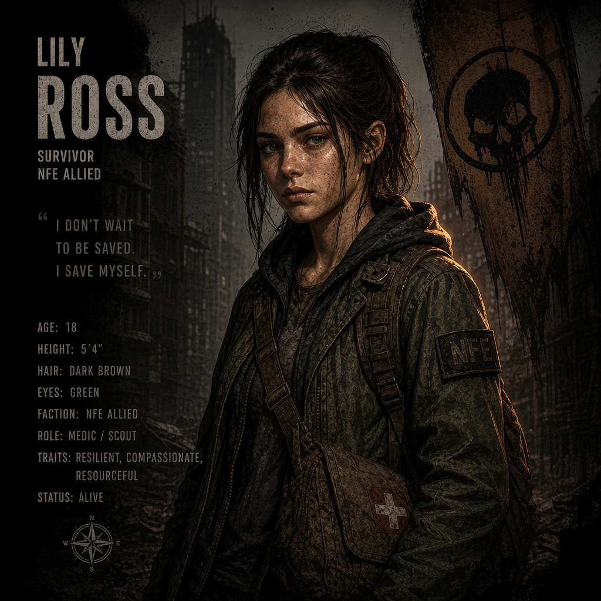

LILY ROSS — SURVIVOR DOSSIER
Recovered personnel file from the Eden Directorate archives. Lily Ross is a young survivor with exceptional pattern-recognition abilities and a rare immunity profile.
Subject Portrait
Recovered Image File
Biography
Field NotesLily Ross, age 18, emerged from the Marsh Survivors group under Rosa’s care. Known for her innocence, intelligence, and uncanny ability to detect patterns in infected behavior.
No infection marks present. Psychological profile indicates high resilience despite traumatic exposure.
Additional Notes
Encrypted LogsLily’s cognitive abilities may be linked to early exposure to Z‑Virus environments. Further study recommended.